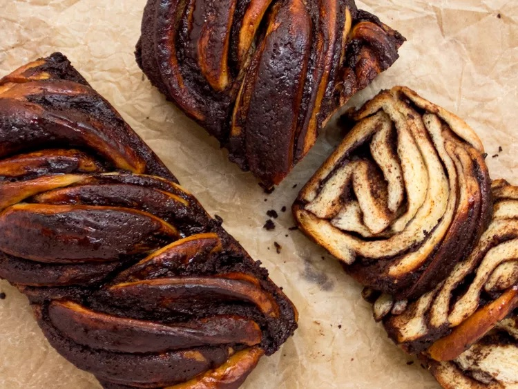

Chocolate Babka (from Serious Eats)

Description
Rich, tender, and filled with just the right amount of chocolate, this delicious babka will fill your home with the enticing scent of yeasted dough and cocoa.
Ingredients
For the Tangzhong:
- 120g (1/2 cup) water
- 28g bread flour (1 ounce; 3 tablespoons)
- 90g (1/4 cup plus 2 tablespoons) cold whole milk
- 3 large eggs, cold
- 2 large egg yolks, cold
For the Dough:
- 510g bread flour (about 3 1/2 cups; 18 ounces)
- 75g granulated sugar (1/4 cup plus 2 tablespoons; about 2 3/4 ounces)
- 9g (1 tablespoon) Diamond Crystal kosher salt; for table salt, use half as much by volume or the same weight
- 7g (2 1/4 teaspoons) instant yeast
- 113g unsalted butter (4 ounces; 8 tablespoons), cut into 1/2-inch cubes, softened, plus more for greasing
For the Filling:
- 175g (3/4 cup) heavy cream
- 113g unsalted butter (4 ounces; 8 tablespoons), cut into 1/2-inch cubes
- 100g granulated sugar (3 1/2 ounces; 1/2 cup)
- 2 teaspoon Diamond Crystal kosher salt; for table salt, use half as much by volume
- 170g (6 ounces) finely chopped dark chocolate, roughly 72% cacao
- 2 teaspoons (30ml) pure vanilla extract
- 1 teaspoon ground cinnamon
- 1 teaspoon espresso
- 2g (about 2 tablespoons) sifted unsweetened natural or Dutch-process cocoa powder
For the Simple Syrup:
- 50g granulated sugar (1/4 cup; 1 3/4 ounces)
- 60g (1/4 cup) water
Steps
- For the Tangzhong: In a medium microwave-safe bowl, whisk water and bread flour together until smooth. Microwave for 20 seconds. Whisk, then repeat 1 to 2 more times, whisking after each interval, until mixture thickens to a pudding-like consistency. If needed, continue heating mixture in 10-second intervals, stirring each time, until pudding-like consistency is achieved. Let cool, stirring occasionally, until room temperature, about 5 minutes. Once cool, add milk to the tangzhong and whisk to combine. Add whole eggs and yolks to the tangzhong mixture and whisk until well-combined and no streaks remain. Set aside.